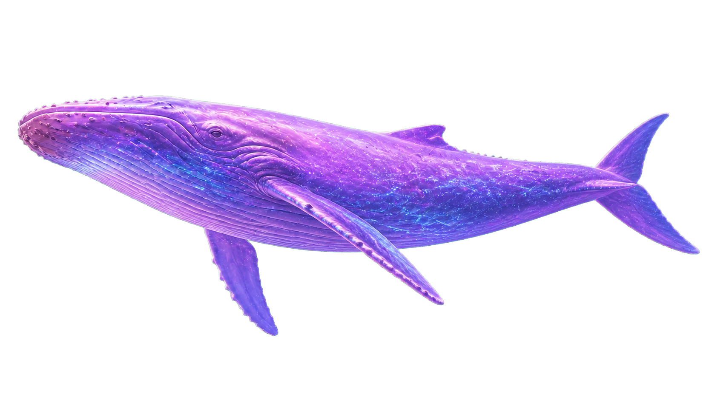

STARRY WHALE LIBRARY
도서 관리 API 실습
원하는 실습 항목을 선택해 주세요.
1일 차 — 조회
1. 서버 상태
2. 도서 목록
3. 단건 조회
4. 제목 검색
5. 저자 필터·정렬
6. 페이지네이션
2일 차 — 등록과 검증
7. 도서 등록 폼
8. 검증 오류 표시
9. 등록 후 목록 갱신
10. 404 구분 처리
11. 태그·출판사 입력
12. 상태 코드 통합 처리
API 자동 문서 (Swagger UI) 열기